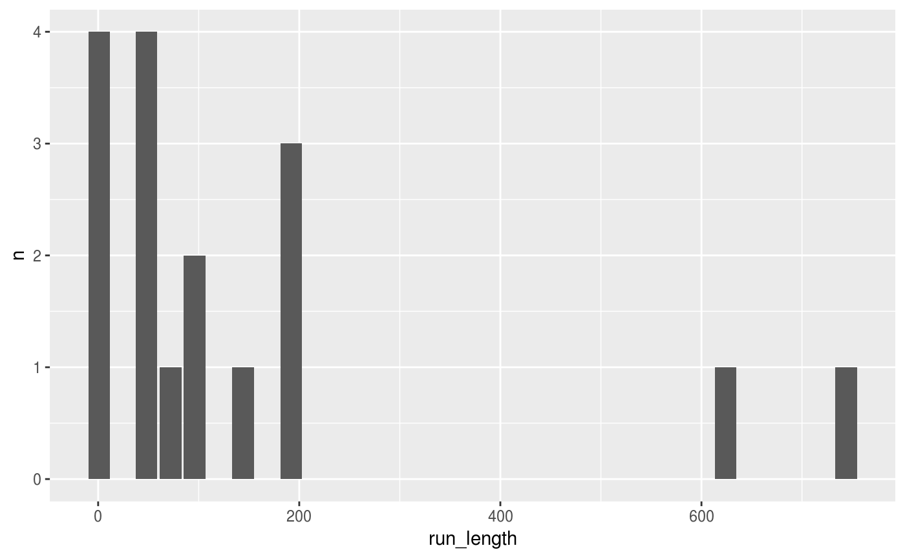
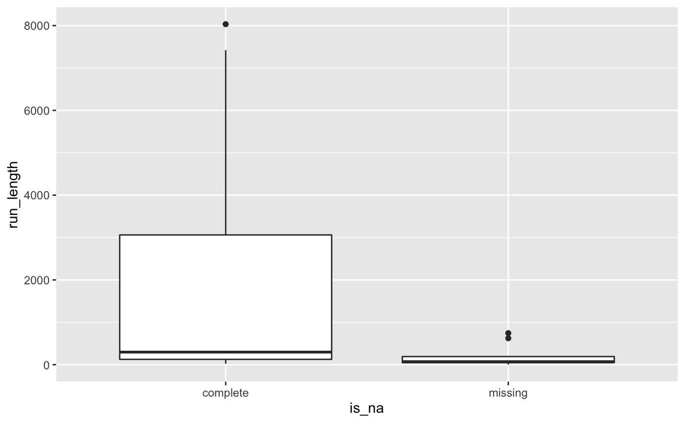

R/miss-x-run.R
miss_var_run.RdIt us useful to find the number of missing values that occur in a single run.
The function, miss_var_run(), returns a dataframe with the column names
"run_length" and "is_na", which describe the length of the run, and
whether that run describes a missing value.
miss_var_run(data, var)
| data | data.frame |
|---|---|
| var | a bare variable name |
dataframe with column names "run_length" and "is_na", which describe the length of the run, and whether that run describes a missing value.
pct_miss_case() prop_miss_case() pct_miss_var() prop_miss_var() pct_complete_case() prop_complete_case() pct_complete_var() prop_complete_var() miss_prop_summary() miss_case_summary() miss_case_table() miss_summary() miss_var_prop() miss_var_run() miss_var_span() miss_var_summary() miss_var_table() n_complete() n_complete_row() n_miss() n_miss_row() pct_complete() pct_miss() prop_complete() prop_complete_row() prop_miss()
miss_var_run(pedestrian, hourly_counts)#> # A tibble: 35 x 2 #> run_length is_na #> <int> <chr> #> 1 6628 complete #> 2 1 missing #> 3 5250 complete #> 4 624 missing #> 5 3652 complete #> 6 1 missing #> 7 1290 complete #> 8 744 missing #> 9 7420 complete #> 10 1 missing #> # … with 25 more rowslibrary(dplyr) # find the number of runs missing/complete for each month pedestrian %>% group_by(month) %>% miss_var_run(hourly_counts)#> # A tibble: 51 x 3 #> month run_length is_na #> <ord> <int> <chr> #> 1 January 2976 complete #> 2 February 2784 complete #> 3 March 2976 complete #> 4 April 888 complete #> 5 April 552 missing #> 6 April 1440 complete #> 7 May 744 complete #> 8 May 72 missing #> 9 May 2160 complete #> 10 June 2880 complete #> # … with 41 more rowslibrary(ggplot2) # explore the number of missings in a given run miss_var_run(pedestrian, hourly_counts) %>% filter(is_na == "missing") %>% count(run_length) %>% ggplot(aes(x = run_length, y = n)) + geom_col()# look at the number of missing values and the run length of these. miss_var_run(pedestrian, hourly_counts) %>% ggplot(aes(x = is_na, y = run_length)) + geom_boxplot()#> # A tibble: 51 x 3 #> month run_length is_na #> <ord> <int> <chr> #> 1 January 2976 complete #> 2 February 2784 complete #> 3 March 2976 complete #> 4 April 888 complete #> 5 April 552 missing #> 6 April 1440 complete #> 7 May 744 complete #> 8 May 72 missing #> 9 May 2160 complete #> 10 June 2880 complete #> # … with 41 more rows